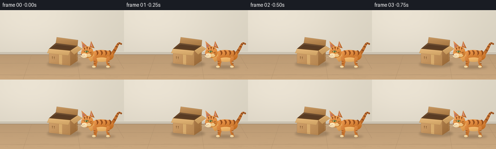
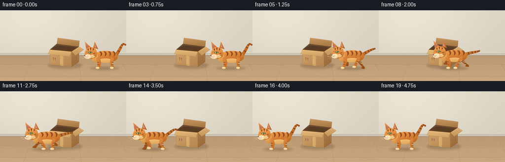
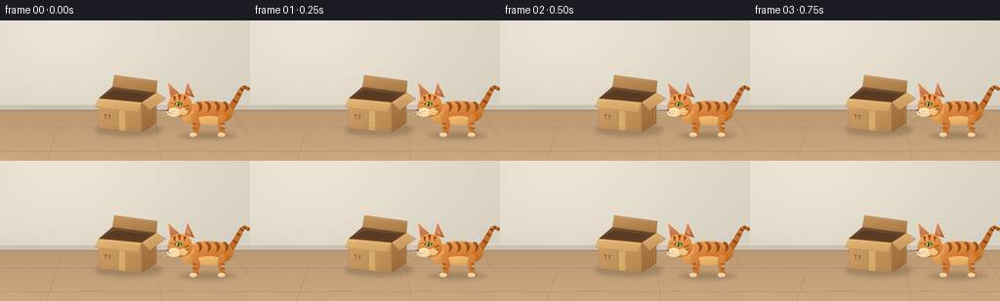
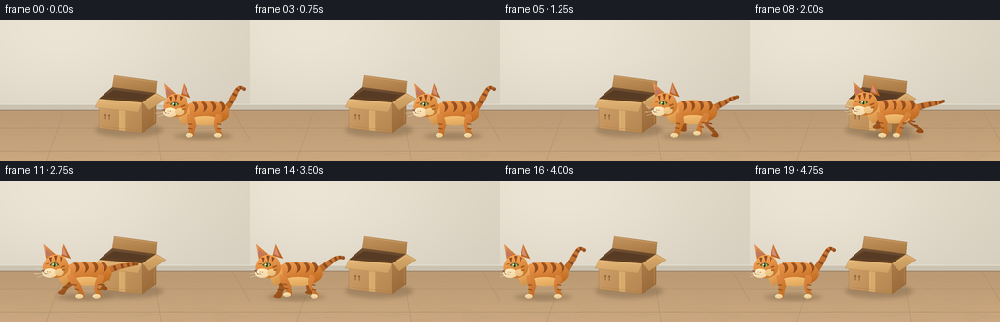

CODING AGENTS AS PIXEL WORLD MODELS
traex/GPT-6.1-Sol · dynamic_spatial_relationship_0007
点击播放 · 原生 RGB 像素
逐轮保存的候选
回放视频、检查图与代码变化。
每份候选均可单独播放。实际图片检查记录在下方工具轨迹中。
候选 01播放与检查图
点击播放 · 原生 RGB 像素


展开代码变化
--- 上一保存版本
+++ 本次保存版本
@@ -0,0 +1,213 @@
+from pathlib import Path
+import math
+import numpy as np
+from PIL import Image, ImageDraw, ImageFilter
+import artifact_io
+
+ROOT = Path(__file__).resolve().parent
+W,H,S=256,144,4
+rng=np.random.default_rng(17)
+
+def bez(p, n=30):
+ p=np.array(p,float)
+ t=np.linspace(0,1,n)[:,None]
+ return (1-t)**3*p[0]+3*(1-t)**2*t*p[1]+3*(1-t)*t*t*p[2]+t**3*p[3]
+
+def path(parts):
+ pts=[]
+ for q in parts:
+ if len(q)==4: pts.extend(bez(q))
+ else: pts.extend(q)
+ return pts
+
+class Canvas:
+ def __init__(self,img): self.im=img;self.d=ImageDraw.Draw(img)
+ def poly(self,p,fill): self.d.polygon([(round(x*S),round(y*S)) for x,y in p],fill=fill)
+ def line(self,p,fill,width=1): self.d.line([(round(x*S),round(y*S)) for x,y in p],fill=fill,width=max(1,round(width*S)),joint='curve')
+ def ellipse(self,b,fill): self.d.ellipse(tuple(round(x*S) for x in b),fill=fill)
+ def shade(self,p,base,light=(0,-1),strength=20,edge=None):
+ mask=Image.new('L',self.im.size);d=ImageDraw.Draw(mask)
+ d.polygon([(round(x*S),round(y*S)) for x,y in p],fill=255)
+ box=mask.getbbox()
+ if not box:return
+ x0,y0,x1,y1=box; h=y1-y0;w=x1-x0
+ xx=np.linspace(-1,1,w)[None,:]; yy=np.linspace(-1,1,h)[:,None]
+ v=light[0]*xx+light[1]*yy
+ a=np.clip(np.asarray(base)[None,None,:]+strength*v[:,:,None],0,255).astype('uint8')
+ patch=Image.fromarray(a); self.im.paste(patch,(x0,y0),mask.crop(box));self.d=ImageDraw.Draw(self.im)
+ if edge:self.line(list(p)+[p[0]],edge,0.35)
+ def ovalshade(self,b,base,strength=18):
+ x0,y0,x1,y1=b
+ p=[((x0+x1)/2+(x1-x0)/2*math.cos(t),(y0+y1)/2+(y1-y0)/2*math.sin(t)) for t in np.linspace(0,2*math.pi,90)]
+ self.shade(p,base,(-.4,-1),strength)
+
+def background():
+ yy,xx=np.mgrid[0:H*S,0:W*S]; x=xx/S;y=yy/S
+ glow=np.exp(-((x-62)**2/22000+(y-20)**2/9000))
+ wall=np.stack([217+19*glow-0.05*y,210+18*glow-0.05*y,193+19*glow-0.04*y],-1)
+ floor=np.stack([186+0.32*(y-91),153+0.28*(y-91),115+0.22*(y-91)],-1)
+ arr=np.where((y>91)[...,None],floor,wall)
+ arr+=rng.normal(0,0.38,(H*S,W*S,1))
+ im=Image.fromarray(np.clip(arr,0,255).astype('uint8'));c=Canvas(im)
+ # Quiet wall and wooden floor, fixed perspective.
+ c.poly([(0,86),(256,86),(256,92),(0,92)],(203,194,177))
+ c.line([(0,86),(256,86)],(232,225,209),.7)
+ c.line([(0,92),(256,92)],(148,125,98),.8)
+ for y in [110,134]:
+ c.line([(0,y),(256,y)],(170,139,104),.5)
+ c.line([(0,y+.7),(256,y+.7)],(203,172,131),.35)
+ for x in [-20,65,157,238]:
+ c.line([(x,92),(128+(x-128)*1.28,144)],(174,143,107),.45)
+ # Very subtle wood grain.
+ for i in range(70):
+ y=float(rng.uniform(96,144));x=float(rng.uniform(0,256));ln=float(rng.uniform(5,28))
+ c.line([(x,y),(x+ln*.4,y-.16),(x+ln,y)],(185,153,116),.18)
+ return im
+
+BG=background()
+
+def shadow(im,cx,y,rx,ry,opacity):
+ mask=Image.new('L',im.size);d=ImageDraw.Draw(mask)
+ d.ellipse((int((cx-rx)*S),int((y-ry)*S),int((cx+rx)*S),int((y+ry)*S)),fill=opacity)
+ mask=mask.filter(ImageFilter.GaussianBlur(2*S))
+ im.paste((91,70,48),(0,0),mask)
+
+def box(im):
+ c=Canvas(im)
+ # Open top and standing rear flap.
+ c.shade([(115,68),(117,56),(161,62),(160,74)],(182,134,80),(-.3,-1),12,(151,110,65))
+ c.line([(118,57),(160,63)],(223,180,117),.55)
+ c.shade([(101,80),(115,68),(160,74),(145,84)],(102,70,41),(0,-1),12)
+ c.poly([(106,78),(117,71),(154,76),(144,81)],(88,59,36))
+ c.shade([(101,80),(145,84),(145,115),(101,110)],(195,147,93),(-.7,-.5),11,(154,111,64))
+ c.shade([(145,84),(160,74),(160,105),(145,115)],(163,115,65),(-.3,-1),10,(142,100,57))
+ # Tape and folded corrugated seams.
+ c.poly([(122,82),(128,82.5),(128,112.9),(122,112.3)],(215,171,108))
+ c.line([(122.8,86),(122.8,110)],(225,185,124),.4)
+ c.line([(104,108),(143,112.3)],(169,121,70),.45)
+ c.line([(158,79),(158,104)],(187,139,82),.5)
+ c.shade([(101,80),(145,84),(141,94),(97,89)],(218,173,111),(-.2,-1),10,(176,129,75))
+ c.line([(102,81),(144,85)],(238,196,133),.55)
+ c.shade([(145,84),(160,74),(170,80),(153,92)],(207,161,100),(0,-1),10,(163,116,65))
+ c.line([(147,84),(160,76),(168,80)],(234,192,126),.6)
+ # A few fine fibers, small shipping marks, no lettering.
+ for x,y in [(107,98),(132,103),(109,105),(136,99),(154,99)]:
+ c.line([(x,y),(x+2,y+.15)],(184,135,79),.22)
+ c.line([(108,96),(108,101)],(134,93,52),.75)
+ c.poly([(106.7,97.3),(108,95.8),(109.3,97.3)],(134,93,52))
+ c.line([(112,96.4),(112,101.4)],(134,93,52),.75)
+ c.poly([(110.7,97.8),(112,96.3),(113.3,97.8)],(134,93,52))
+
+
+def cat(im,cx,base,phase,run,frame):
+ c=Canvas(im)
+ bounce=-2.0*run*(.5+.5*math.cos(phase*2))
+ cy=base+bounce
+ stretch=1+run*.06*math.sin(phase)
+ def P(p):return [(cx+x*stretch,cy+y) for x,y in p]
+ def poly(p,col):c.poly(P(p),col)
+ def line(p,col,w=1):c.line(P(p),col,w)
+ def shade(p,col,strength=17):c.shade(P(p),col,(-.4,-1),strength)
+ def oval(b,col,strength=18):
+ x0,y0,x1,y1=b;c.ovalshade((cx+x0*stretch,cy+y0,cx+x1*stretch,cy+y1),col,strength)
+ # Tail is curved upright when still, swept back when running.
+ tail=bez([(20,-26),(33,-31-10*(1-run)),(32+13*run,-54+23*run),(40+9*run,-48+14*run+2*math.sin(phase)*run)],45)
+ # Tapered tail silhouette.
+ tang=np.gradient(tail,axis=0);norm=np.stack([-tang[:,1],tang[:,0]],axis=1);norm/=np.linalg.norm(norm,axis=1)[:,None]
+ widths=np.linspace(3.5,1.5,len(tail))
+ outline=np.concatenate([tail+norm*widths[:,None],(tail-norm*widths[:,None])[::-1]])
+ shade(outline,(193,111,45),15)
+ for t in [9,18,27,36]:
+ line([tail[t]-norm[t]*widths[t]*.85,tail[t]+norm[t]*widths[t]*.85],(138,74,33),2.6)
+ oval((tail[-1,0]-1.7,tail[-1,1]-1.7,tail[-1,0]+1.7,tail[-1,1]+1.7),(155,84,35),5)
+ # Limbs: two on the far side, followed by body and near-side limbs.
+ def leg(front,far):
+ x=-15 if front else 14
+ a=phase+(0 if front else 1.4)+(math.pi if far else 0)
+ swing=math.sin(a)*run
+ lift=max(0,math.cos(a))*9*run
+ footx=x+(11 if front else 13)*swing
+ footy=-lift-bounce
+ knee=(x+(3 if front else -5)+4*swing,-10-2*run)
+ root=(x,-22)
+ pts=path([[ (root[0]-3,root[1]),(x-5,-16),(knee[0]-2,knee[1]),(footx-2,footy-3)],
+ [(footx-2,footy-3),(footx-5,footy-1),(footx-5,footy+1),(footx+2,footy+1)],
+ [(footx+2,footy+1),(footx+5,footy),(footx+3,footy-4),(knee[0]+3,knee[1])],
+ [(knee[0]+3,knee[1]),(x+5,-17),(x+4,-23),(root[0]-3,root[1])]])
+ shade(pts,(163,91,37) if far else (207,123,52),13)
+ for u in [0.37,0.6]:
+ sy=-20+(footy+20)*u
+ sx=x+(footx-x)*u
+ line([(sx-2,sy),(sx+2,sy+.7)],(135,72,29) if far else (158,86,32),1.45)
+ if not far:
+ oval((footx-5,footy-3,footx+2.5,footy+1.4),(241,215,162),7)
+ line([(footx-3.3,footy),(footx-3.2,footy+1)],(173,140,100),.35)
+ line([(footx-.7,footy),(footx-.7,footy+1)],(173,140,100),.35)
+ leg(True,True);leg(False,True)
+ # Body, underbelly and softly shaded shoulder.
+ torso=path([[(-22,-25),(-20,-38),(7,-38),(21,-31)],[(21,-31),(31,-20),(18,-12),(6,-12)],[ (6,-12),(-10,-10),(-23,-15),(-22,-25)]])
+ shade(torso,(213,128,53),23)
+ oval((-15,-20,15,-11),(234,178,103),10)
+ # Tabby bands follow the curvature of the back.
+ for off in [-11,-2,7,16]:
+ stripes=path([[(off-2,-34),(off+1,-32),(off+2,-27),(off,-24)],[(off,-24),(off+5,-27),(off+5,-31),(off+2,-34)],[(off+2,-34),(off,-35),(off-1,-35),(off-2,-34)]])
+ shade(stripes,(151,80,31),7)
+ leg(False,False)
+ chest=path([[(-21,-31),(-31,-30),(-31,-19),(-22,-11)], [(-22,-11),(-17,-13),(-14,-18),(-16,-28)], [(-16,-28),(-17,-31),(-19,-32),(-21,-31)]])
+ shade(chest,(231,165,89),19)
+ leg(True,False)
+ # Ears behind the head.
+ shade([(-39,-37),(-42,-54),(-30,-43)],(210,128,64),15)
+ poly([(-38.7,-42),(-40.7,-50),(-34,-43)],(191,118,105))
+ shade([(-25,-42),(-22,-54),(-15,-39)],(197,113,48),15)
+ poly([(-23.3,-44),(-22.1,-50.4),(-18.4,-41.4)],(211,142,122))
+ head=path([[(-40,-37),(-36,-46),(-20,-45),(-18,-34)],[(-18,-34),(-14,-25),(-22,-19),(-31,-19)],[(-31,-19),(-43,-20),(-45,-30),(-40,-37)]])
+ shade(head,(224,142,65),21)
+ # Far eye is a small hint at the bridge of the nose.
+ line([(-39.5,-33),(-36.8,-33.7)],(92,74,47),.8)
+ # White muzzle and chin.
+ oval((-43,-28.5,-29,-19.2),(250,224,178),10)
+ oval((-31,-28,-22,-21),(238,197,132),8)
+ # Forehead stripes, cheek markings.
+ poly([(-37,-40),(-35,-34.7),(-34,-40.4)],(141,75,34))
+ poly([(-32,-42),(-30.3,-35.7),(-28.8,-42.1)],(145,77,31))
+ poly([(-26,-41),(-25.4,-35.8),(-23,-39.7)],(145,77,31))
+ line([(-21,-31),(-25,-29.5)],(157,86,34),1.5)
+ line([(-20.8,-27.3),(-24,-26.5)],(157,86,34),1.3)
+ # Large clear almond-shaped green eye.
+ eye=path([[(-36,-32.2),(-33.4,-35.1),(-28.8,-35),(-27.2,-32.1)],[(-27.2,-32.1),(-30.2,-29.9),(-33.5,-29.8),(-36,-32.2)]])
+ poly(eye,(73,64,40))
+ oval((-34.5,-33.9,-28.7,-30.2),(157,177,84),6)
+ oval((-32.3,-34,-30.8,-30.1),(34,42,28),2)
+ oval((-33.1,-33.3,-31.9,-32.1),(255,250,214),0)
+ # Nose, mouth and fine whiskers.
+ poly([(-44,-26.8),(-40.5,-27.3),(-42,-24.8)],(133,78,68))
+ line([(-42,-24.8),(-40.6,-23.1),(-37.7,-23.2)],(116,74,47),.55)
+ for x,y in [(-38,-25),(-35.9,-24.8),(-37.6,-22.9)]:oval((x-.35,y-.35,x+.35,y+.35),(148,113,73),0)
+ for pts in [[(-38,-24.5),(-47,-23),(-51,-22.8)],[(-38,-25.7),(-45,-27.5),(-49,-29)],[(-37,-23.2),(-44,-20.7),(-48,-19.5)]]:
+ line(pts,(245,232,203),.42)
+ # Selective light edge on the back and ear.
+ line([(-15,-34.1),(-4,-35.3),(6,-34.6)],(240,177,101),.55)
+ line([(-41,-51),(-40,-46)],(246,182,112),.5)
+
+
+def main():
+ frames=[]
+ for i in range(20):
+ # Establish relation, accelerate left, then settle clearly left of box.
+ t=max(0,min(1,(i-3)/12))
+ e=t*t*(3-2*t)
+ cx=210-164*e
+ run=math.sin(math.pi*t)**.5 if 0<t<1 else 0
+ phase=2*math.pi*(i-3)*.29
+ im=BG.copy()
+ shadow(im,132,112,35,7,75)
+ box(im)
+ shadow(im,cx-2,118,30,4,64)
+ shadow(im,cx-2,118,20,2,35)
+ cat(im,cx,118,phase,run,i)
+ im=im.resize((W,H),Image.Resampling.LANCZOS)
+ frames.append(np.asarray(im.convert('RGB')))
+ artifact_io.save(np.stack(frames),ROOT)
+
+if __name__=='__main__':main()
候选 02播放与检查图
点击播放 · 原生 RGB 像素


展开代码变化
--- 上一保存版本
+++ 本次保存版本
@@ -197,7 +197,7 @@
# Establish relation, accelerate left, then settle clearly left of box.
t=max(0,min(1,(i-3)/12))
e=t*t*(3-2*t)
- cx=210-164*e
+ cx=214-160*e
run=math.sin(math.pi*t)**.5 if 0<t<1 else 0
phase=2*math.pi*(i-3)*.29
im=BG.copy()
可观测工具轨迹
实际执行的命令与返回图片。
命令 1exit 0
/bin/bash -lc 'ls -la && cat prompt.txt && cat GENERATION_RULES.md && cat task_spec.json'
命令 2exit 0
/bin/bash -lc 'cat artifact_io.py'
命令 3exit 0
/bin/bash -lc "python - <<'PY' import PIL,numpy print(PIL.__version__) PY"
命令 4exit 0
/bin/bash -lc "cat > generate.py <<'PY'
from pathlib import Path
import math
import numpy as np
from PIL import Image, ImageDraw, ImageFilter
import artifact_io
ROOT = Path(__file__).resolve().parent
W,H,S=256,144,4
rng=np.random.default_rng(17)
def bez(p, n=30):
p=np.array(p,float)
t=np.linspace(0,1,n)[:,None]
return (1-t)**3*p[0]+3*(1-t)**2*t*p[1]+3*(1-t)*t*t*p[2]+t**3*p[3]
def path(parts):
pts=[]
for q in parts:
if len(q)==4: pts.extend(bez(q))
else: pts.extend(q)
return pts
class Canvas:
def __init__(self,img): self.im=img;self.d=ImageDraw.Draw(img)
def poly(self,p,fill): self.d.polygon([(round(x*S),round(y*S)) for x,y in p],fill=fill)
def line(self,p,fill,width=1): self.d.line([(round(x*S),round(y*S)) for x,y in p],fill=fill,width=max(1,round(width*S)),joint='curve')
def ellipse(self,b,fill): self.d.ellipse(tuple(round(x*S) for x in b),fill=fill)
def shade(self,p,base,light=(0,-1),strength=20,edge=None):
mask=Image.new('L',self.im.size);d=ImageDraw.Draw(mask)
d.polygon([(round(x*S),round(y*S)) for x,y in p],fill=255)
box=mask.getbbox()
if not box:return
x0,y0,x1,y1=box; h=y1-y0;w=x1-x0
xx=np.linspace(-1,1,w)[None,:]; yy=np.linspace(-1,1,h)[:,None]
v=light[0]*xx+light[1]*yy
a=np.clip(np.asarray(base)[None,None,:]+strength*v[:,:,None],0,255).astype('uint8')
patch=Image.fromarray(a); self.im.paste(patch,(x0,y0),mask.crop(box));self.d=ImageDraw.Draw(self.im)
if edge:self.line(list(p)+[p[0]],edge,0.35)
def ovalshade(self,b,base,strength=18):
x0,y0,x1,y1=b
p=[((x0+x1)/2+(x1-x0)/2*math.cos(t),(y0+y1)/2+(y1-y0)/2*math.sin(t)) for t in np.linspace(0,2*math.pi,90)]
self.shade(p,base,(-.4,-1),strength)
def background():
yy,xx=np.mgrid[0:H*S,0:W*S]; x=xx/S;y=yy/S
glow=np.exp(-((x-62)**2/22000+(y-20)**2/9000))
wall=np.stack([217+19*glow-0.05*y,210+18*glow-0.05*y,193+19*glow-0.04*y],-1)
floor=np.stack([186+0.32*(y-91),153+0.28*(y-91),115+0.22*(y-91)],-1)
arr=np.where((y>91)[...,None],floor,wall)
arr+=rng.normal(0,0.38,(H*S,W*S,1))
im=Image.fromarray(np.clip(arr,0,255).astype('uint8'));c=Canvas(im)
# Quiet wall and wooden floor, fixed perspective.
c.poly([(0,86),(256,86),(256,92),(0,92)],(203,194,177))
c.line([(0,86),(256,86)],(232,225,209),.7)
c.line([(0,92),(256,92)],(148,125,98),.8)
for y in [110,134]:
c.line([(0,y),(256,y)],(170,139,104),.5)
c.line([(0,y+.7),(256,y+.7)],(203,172,131),.35)
for x in [-20,65,157,238]:
c.line([(x,92),(128+(x-128)*1.28,144)],(174,143,107),.45)
# Very subtle wood grain.
for i in range(70):
y=float(rng.uniform(96,144));x=float(rng.uniform(0,256));ln=float(rng.uniform(5,28))
c.line([(x,y),(x+ln*.4,y-.16),(x+ln,y)],(185,153,116),.18)
return im
BG=background()
def shadow(im,cx,y,rx,ry,opacity):
mask=Image.new('L',im.size);d=ImageDraw.Draw(mask)
d.ellipse((int((cx-rx)*S),int((y-ry)*S),int((cx+rx)*S),int((y+ry)*S)),fill=opacity)
mask=mask.filter(ImageFilter.GaussianBlur(2*S))
im.paste((91,70,48),(0,0),mask)
def box(im):
c=Canvas(im)
# Open top and standing rear flap.
c.shade([(115,68),(117,56),(161,62),(160,74)],(182,134,80),(-.3,-1),12,(151,110,65))
c.line([(118,57),(160,63)],(223,180,117),.55)
c.shade([(101,80),(115,68),(160,74),(145,84)],(102,70,41),(0,-1),12)
c.poly([(106,78),(117,71),(154,76),(144,81)],(88,59,36))
c.shade([(101,80),(145,84),(145,115),(101,110)],(195,147,93),(-.7,-.5),11,(154,111,64))
c.shade([(145,84),(160,74),(160,105),(145,115)],(163,115,65),(-.3,-1),10,(142,100,57))
# Tape and folded corrugated seams.
c.poly([(122,82),(128,82.5),(128,112.9),(122,112.3)],(215,171,108))
c.line([(122.8,86),(122.8,110)],(225,185,124),.4)
c.line([(104,108),(143,112.3)],(169,121,70),.45)
c.line([(158,79),(158,104)],(187,139,82),.5)
c.shade([(101,80),(145,84),(141,94),(97,89)],(218,173,111),(-.2,-1),10,(176,129,75))
c.line([(102,81),(144,85)],(238,196,133),.55)
c.shade([(145,84),(160,74),(170,80),(153,92)],(207,161,100),(0,-1),10,(163,116,65))
c.line([(147,84),(160,76),(168,80)],(234,192,126),.6)
# A few fine fibers, small shipping marks, no lettering.
for x,y in [(107,98),(132,103),(109,105),(136,99),(154,99)]:
c.line([(x,y),(x+2,y+.15)],(184,135,79),.22)
c.line([(108,96),(108,101)],(134,93,52),.75)
c.poly([(106.7,97.3),(108,95.8),(109.3,97.3)],(134,93,52))
c.line([(112,96.4),(112,101.4)],(134,93,52),.75)
c.poly([(110.7,97.8),(112,96.3),(113.3,97.8)],(134,93,52))
def cat(im,cx,base,phase,run,frame):
c=Canvas(im)
bounce=-2.0*run*(.5+.5*math.cos(phase*2))
cy=base+bounce
stretch=1+run*.06*math.sin(phase)
def P(p):return [(cx+x*stretch,cy+y) for x,y in p]
def poly(p,col):c.poly(P(p),col)
def line(p,col,w=1):c.line(P(p),col,w)
def shade(p,col,strength=17):c.shade(P(p),col,(-.4,-1),strength)
def oval(b,col,strength=18):
x0,y0,x1,y1=b;c.ovalshade((cx+x0*stretch,cy+y0,cx+x1*stretch,cy+y1),col,strength)
# Tail is curved upright when still, swept back when running.
tail=bez([(20,-26),(33,-31-10*(1-run)),(32+13*run,-54+23*run),(40+9*run,-48+14*run+2*math.sin(phase)*run)],45)
# Tapered tail silhouette.
tang=np.gradient(tail,axis=0);norm=np.stack([-tang[:,1],tang[:,0]],axis=1);norm/=np.linalg.norm(norm,axis=1)[:,None]
widths=np.linspace(3.5,1.5,len(tail))
outline=np.concatenate([tail+norm*widths[:,None],(tail-norm*widths[:,None])[::-1]])
shade(outline,(193,111,45),15)
for t in [9,18,27,36]:
line([tail[t]-norm[t]*widths[t]*.85,tail[t]+norm[t]*widths[t]*.85],(138,74,33),2.6)
oval((tail[-1,0]-1.7,tail[-1,1]-1.7,tail[-1,0]+1.7,tail[-1,1]+1.7),(155,84,35),5)
# Limbs: two on the far side, followed by body and near-side limbs.
def leg(front,far):
x=-15 if front else 14
a=phase+(0 if front else 1.4)+(math.pi if far else 0)
swing=math.sin(a)*run
lift=max(0,math.cos(a))*9*run
footx=x+(11 if front else 13)*swing
footy=-lift-bounce
knee=(x+(3 if front else -5)+4*swing,-10-2*run)
root=(x,-22)
pts=path([[ (root[0]-3,root[1]),(x-5,-16),(knee[0]-2,knee[1]),(footx-2,footy-3)],
[(footx-2,footy-3),(footx-5,footy-1),(footx-5,footy+1),(footx+2,footy+1)],
[(footx+2,footy+1),(footx+5,footy),(footx+3,footy-4),(knee[0]+3,knee[1])],
[(knee[0]+3,knee[1]),(x+5,-17),(x+4,-23),(root[0]-3,root[1])]])
shade(pts,(163,91,37) if far else (207,123,52),13)
for u in [0.37,0.6]:
sy=-20+(footy+20)*u
sx=x+(footx-x)*u
line([(sx-2,sy),(sx+2,sy+.7)],(135,72,29) if far else (158,86,32),1.45)
if not far:
oval((footx-5,footy-3,footx+2.5,footy+1.4),(241,215,162),7)
line([(footx-3.3,footy),(footx-3.2,footy+1)],(173,140,100),.35)
line([(footx-.7,footy),(footx-.7,footy+1)],(173,140,100),.35)
leg(True,True);leg(False,True)
# Body, underbelly and softly shaded shoulder.
torso=path([[(-22,-25),(-20,-38),(7,-38),(21,-31)],[(21,-31),(31,-20),(18,-12),(6,-12)],[ (6,-12),(-10,-10),(-23,-15),(-22,-25)]])
shade(torso,(213,128,53),23)
oval((-15,-20,15,-11),(234,178,103),10)
# Tabby bands follow the curvature of the back.
for off in [-11,-2,7,16]:
stripes=path([[(off-2,-34),(off+1,-32),(off+2,-27),(off,-24)],[(off,-24),(off+5,-27),(off+5,-31),(off+2,-34)],[(off+2,-34),(off,-35),(off-1,-35),(off-2,-34)]])
shade(stripes,(151,80,31),7)
leg(False,False)
chest=path([[(-21,-31),(-31,-30),(-31,-19),(-22,-11)], [(-22,-11),(-17,-13),(-14,-18),(-16,-28)], [(-16,-28),(-17,-31),(-19,-32),(-21,-31)]])
shade(chest,(231,165,89),19)
leg(True,False)
# Ears behind the head.
shade([(-39,-37),(-42,-54),(-30,-43)],(210,128,64),15)
poly([(-38.7,-42),(-40.7,-50),(-34,-43)],(191,118,105))
shade([(-25,-42),(-22,-54),(-15,-39)],(197,113,48),15)
poly([(-23.3,-44),(-22.1,-50.4),(-18.4,-41.4)],(211,142,122))
head=path([[(-40,-37),(-36,-46),(-20,-45),(-18,-34)],[(-18,-34),(-14,-25),(-22,-19),(-31,-19)],[(-31,-19),(-43,-20),(-45,-30),(-40,-37)]])
shade(head,(224,142,65),21)
# Far eye is a small hint at the bridge of the nose.
line([(-39.5,-33),(-36.8,-33.7)],(92,74,47),.8)
# White muzzle and chin.
oval((-43,-28.5,-29,-19.2),(250,224,178),10)
oval((-31,-28,-22,-21),(238,197,132),8)
# Forehead stripes, cheek markings.
poly([(-37,-40),(-35,-34.7),(-34,-40.4)],(141,75,34))
poly([(-32,-42),(-30.3,-35.7),(-28.8,-42.1)],(145,77,31))
poly([(-26,-41),(-25.4,-35.8),(-23,-39.7)],(145,77,31))
line([(-21,-31),(-25,-29.5)],(157,86,34),1.5)
line([(-20.8,-27.3),(-24,-26.5)],(157,86,34),1.3)
# Large clear almond-shaped green eye.
eye=path([[(-36,-32.2),(-33.4,-35.1),(-28.8,-35),(-27.2,-32.1)],[(-27.2,-32.1),(-30.2,-29.9),(-33.5,-29.8),(-36,-32.2)]])
poly(eye,(73,64,40))
oval((-34.5,-33.9,-28.7,-30.2),(157,177,84),6)
oval((-32.3,-34,-30.8,-30.1),(34,42,28),2)
oval((-33.1,-33.3,-31.9,-32.1),(255,250,214),0)
# Nose, mouth and fine whiskers.
poly([(-44,-26.8),(-40.5,-27.3),(-42,-24.8)],(133,78,68))
line([(-42,-24.8),(-40.6,-23.1),(-37.7,-23.2)],(116,74,47),.55)
for x,y in [(-38,-25),(-35.9,-24.8),(-37.6,-22.9)]:oval((x-.35,y-.35,x+.35,y+.35),(148,113,73),0)
for pts in [[(-38,-24.5),(-47,-23),(-51,-22.8)],[(-38,-25.7),(-45,-27.5),(-49,-29)],[(-37,-23.2),(-44,-20.7),(-48,-19.5)]]:
line(pts,(245,232,203),.42)
# Selective light edge on the back and ear.
line([(-15,-34.1),(-4,-35.3),(6,-34.6)],(240,177,101),.55)
line([(-41,-51),(-40,-46)],(246,182,112),.5)
def main():
frames=[]
for i in range(20):
# Establish relation, accelerate left, then settle clearly left of box.
t=max(0,min(1,(i-3)/12))
e=t*t*(3-2*t)
cx=210-164*e
run=math.sin(math.pi*t)**.5 if 0<t<1 else 0
phase=2*math.pi*(i-3)*.29
im=BG.copy()
shadow(im,132,112,35,7,75)
box(im)
shadow(im,cx-2,118,30,4,64)
shadow(im,cx-2,118,20,2,35)
cat(im,cx,118,phase,run,i)
im=im.resize((W,H),Image.Resampling.LANCZOS)
frames.append(np.asarray(im.convert('RGB')))
artifact_io.save(np.stack(frames),ROOT)
if __name__=='__main__':main()
PY
python generate.py"命令 5exit 0
/bin/bash -lc "python - <<'PY'
p='generate.py'
s=open(p).read().replace('cx=210-164*e','cx=214-160*e')
open(p,'w').write(s)
PY
python generate.py
python - <<'PY'
from pathlib import Path
import numpy as np
p=Path('.')
a=np.load('pixels.npz')['pixels']
print('RGB artifact:',a.shape,'saved frames:',len(list((p/'frames').glob('*.png'))))
print('Player:',(p/'index.html').is_file(),'Generator:',(p/'generate.py').is_file())
PY"视觉工具实际返回图片 1

保存候选 2 份；完成命令 5 次；可验证图片返回 1 张。原始 API 响应与完整日志保留在本地。